Reliability-aware plant disease detection under image quality degradation. EfficientNet-B0 recognises 38 leaf conditions. A Random Forest estimates the risk that each prediction is wrong.
Every number on this page is read from the project's saved evaluation files. Internal and external results are kept separate.
INTERNAL TEST · PlantVillage, locked held-out setThe same 5,432 test images were degraded at three severities. The largest drop was gaussian noise at severity 3: accuracy 2.2%.
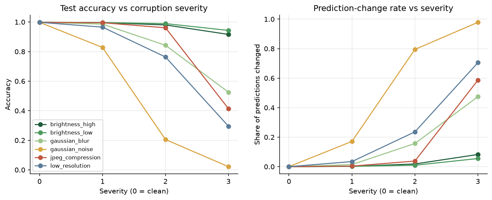
| degradation | severity | value | accuracy | macro-F1 | predictions changed |
|---|---|---|---|---|---|
| brightness high | 1 | 1.3 | 99.6% | 0.993 | 0.2% |
| brightness high | 2 | 1.6 | 98.0% | 0.976 | 1.8% |
| brightness high | 3 | 2.0 | 91.6% | 0.898 | 8.3% |
| brightness low | 1 | 0.7 | 99.7% | 0.995 | 0.2% |
| brightness low | 2 | 0.5 | 98.9% | 0.986 | 1.0% |
| brightness low | 3 | 0.3 | 94.3% | 0.932 | 5.5% |
| gaussian blur | 1 | 1.0 | 98.6% | 0.984 | 1.4% |
| gaussian blur | 2 | 2.0 | 84.3% | 0.831 | 15.7% |
| gaussian blur | 3 | 3.0 | 52.5% | 0.404 | 47.4% |
| gaussian noise | 1 | 0.05 | 82.8% | 0.804 | 17.1% |
| gaussian noise | 2 | 0.1 | 20.5% | 0.110 | 79.5% |
| gaussian noise | 3 | 0.2 | 2.2% | 0.002 | 97.8% |
| jpeg compression | 1 | 30.0 | 99.5% | 0.993 | 0.4% |
| jpeg compression | 2 | 15.0 | 96.1% | 0.954 | 3.8% |
| jpeg compression | 3 | 5.0 | 41.4% | 0.368 | 58.6% |
| low resolution | 1 | 0.5 | 96.5% | 0.964 | 3.5% |
| low resolution | 2 | 0.25 | 76.3% | 0.743 | 23.6% |
| low resolution | 3 | 0.125 | 29.5% | 0.188 | 70.5% |
The Random Forest was trained only on a separate calibration split. Hyper-parameters and every threshold were chosen on reliability-validation data. Test rows are each image clean plus 3 sampled degradations (21,728 rows). Configuration A uses only the uploaded image. Configuration B adds stability under 6 fixed mild perturbations (6 extra model passes).
| method | PR-AUC | ROC-AUC | precision | recall | false alarms |
|---|---|---|---|---|---|
| Confidence threshold | 0.848 | 0.962 | 57.7% | 95.7% | 15.3% |
| Margin threshold | 0.809 | 0.959 | 56.9% | 95.9% | 15.9% |
| Random Forest (A) | 0.886 | 0.972 | 63.7% | 95.0% | 11.8% |
| Random Forest (B) | 0.947 | 0.986 | 66.7% | 97.4% | 10.6% |
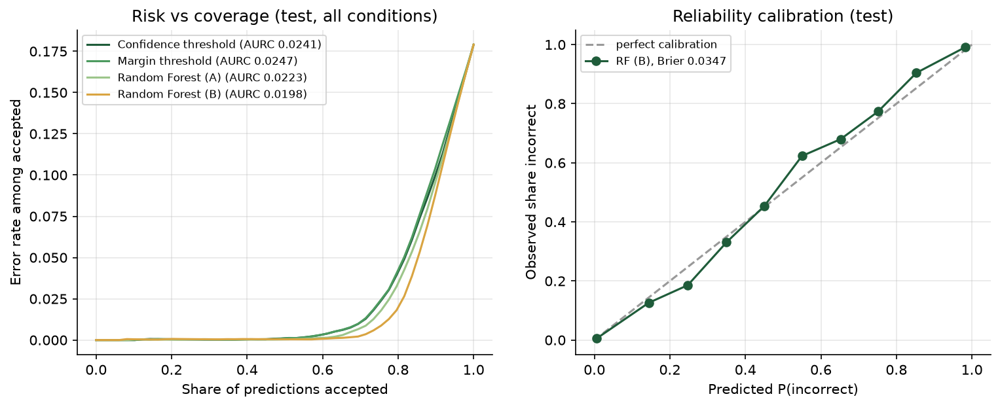
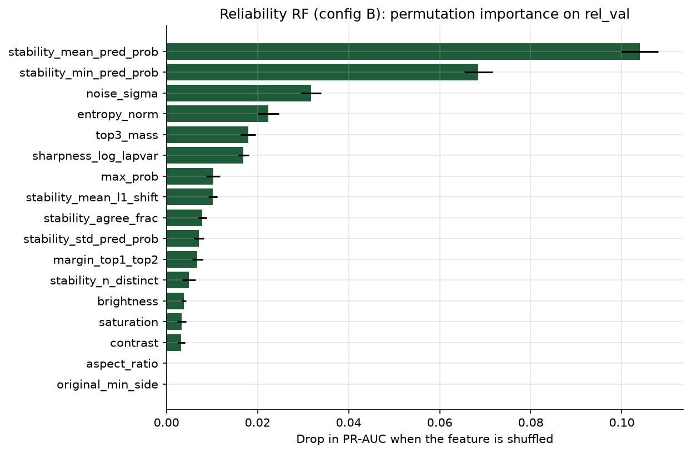
The most useful signals were stability mean pred prob, stability min pred prob, noise sigma, entropy norm.
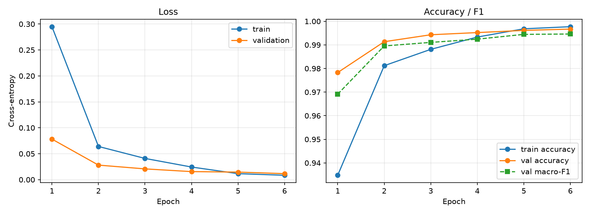
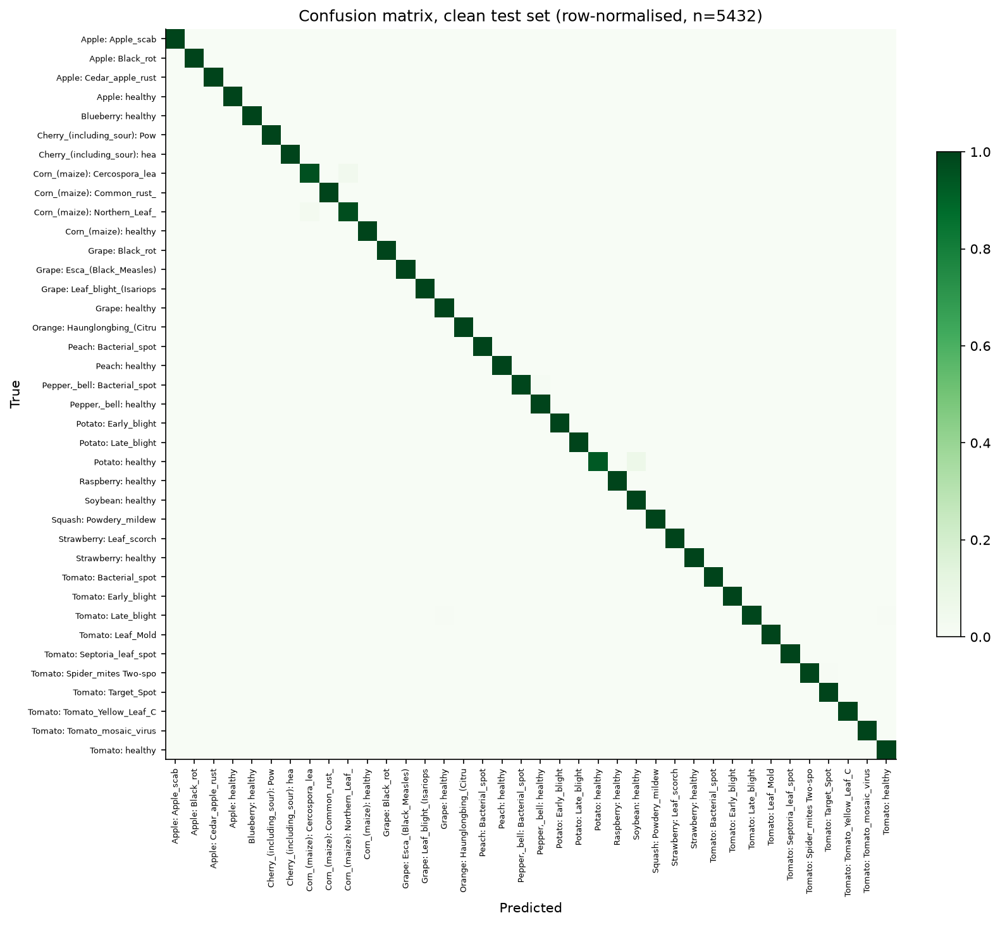
These are bundled with the app so it works without downloading the datasets (PlantVillage, CC BY-SA 3.0).
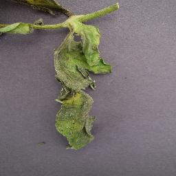
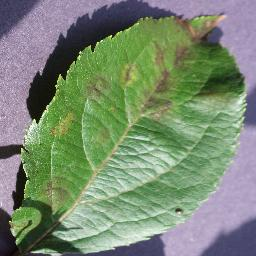
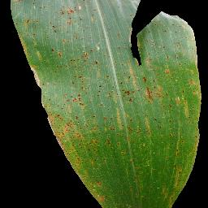
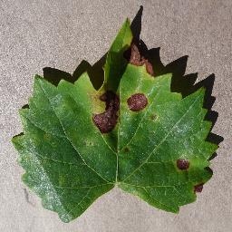
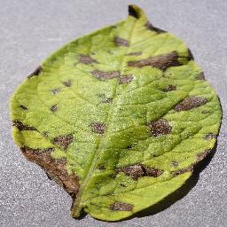
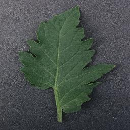
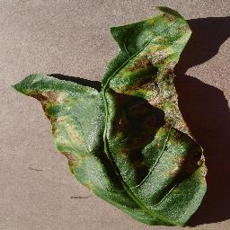
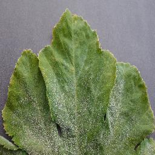
The interactive app runs on your own computer: Disease Detection, Robustness Lab, Reliability Report and Model Evaluation. It loads the trained models, so no training is needed.
git clone https://github.com/ANSHSINGH5999/AgriShield.git cd AgriShield # Windows: double-click setup_windows.bat once, then run_app.bat python -m venv .venv && .venv\Scripts\activate (macOS/Linux: source .venv/bin/activate) pip install -r requirements.txt streamlit run app.py